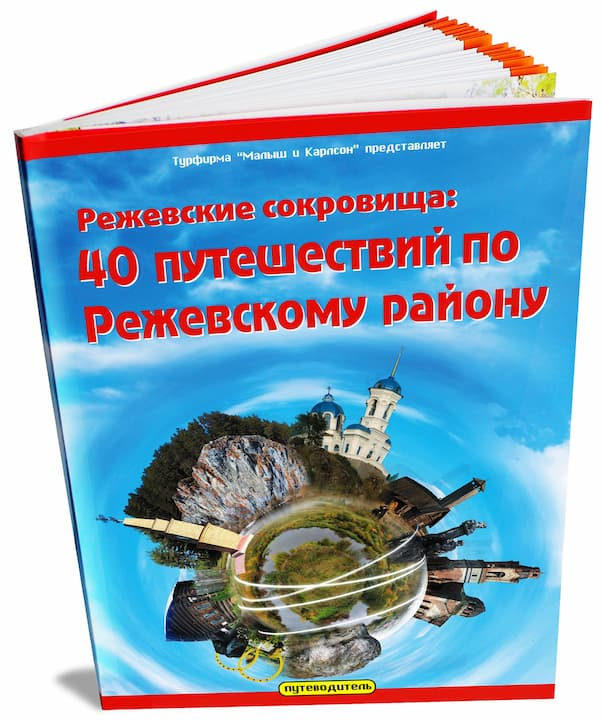

С 2004 года, уже более 20 лет, услугами издательско-полиграфического комплекса «Лазурь» пользуется издательство турфирмы «Малыш и Карлсон», выпуская краеведческую, историческую и туристическую литературу по родному городу Реж и Среднему Уралу.
За это время было издано несколько десятков наименований книг и буклетов. Среди них наиболее популярные: «12 путешествий по Среднему Уралу» (4 издания), «Лучшие путешествия по Среднему Уралу» (3 издания), «По святым местам Урала» (3 издания), Верхотурье (7 изданий), «Город Реж: 12 поколений» (2 издания), «По реке Реж», «40 путешествий по Режевскому району», «Режевские легенды, предания и сказы» и многие другие. За свои заслуги старейшая в Восточном округе Свердловской области турфирма «Малыш и Карлсон» стала Лауреатом конкурса «Лидер Уральского турбизнеса 2009» в номинации «За лучшее освещение темы «Отдых на Урале».
Накопив богатый фактический материал, издательство турфирмы «Малыш и Карлсон» на его основе в 2019 году создает два сайта. Один посвящается достопримечательностям, истории и современности города Реж: «Город Реж: история, достопримечательности, экскурсии». Другой – путешествиям по Уральскому региону: «По святым местам Урала».